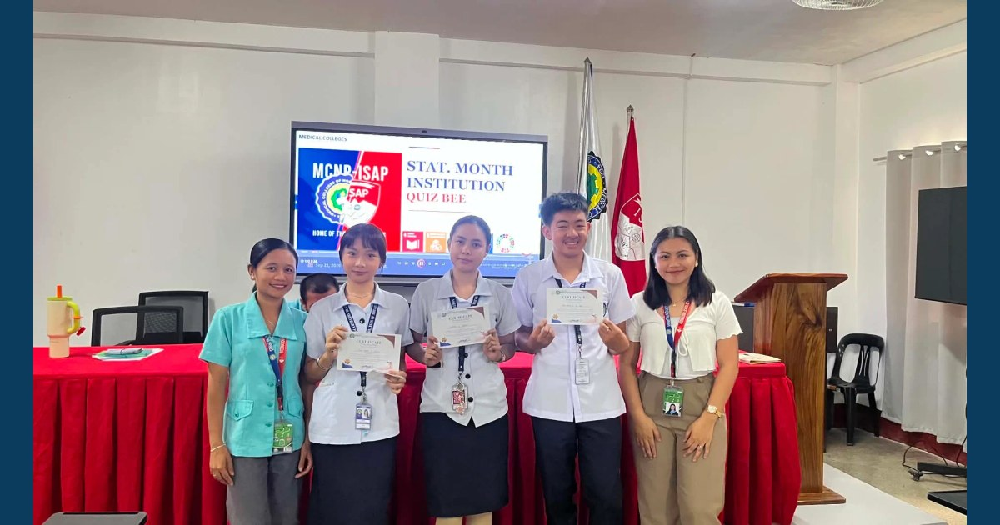

Numbers, Knowledge, and a Winning Spirit!

The MCNP–ISAP Statistical Month Institutional Quiz Bee brought students together on September 21, 2026, to test their knowledge of statistics and celebrate the role of data in research and decision-making. Congratulations to all participants and to our winners!
Read full article